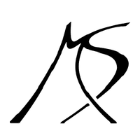

Мария Юрьевна Шара́пова
Содержание:
Главная
Биография:
Детство
Карьера
Личная жизнь
Источники
Источники:
Официальный сайт Марии Шараповой
Книга: Неудержимая. Моя жизнь
Материал из Википедии
Google Картинки
Портал 24СМИ
Портал Узнай ВСЁ
Личная подпись:
